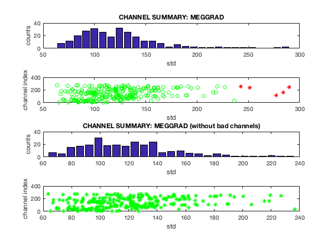
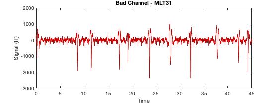
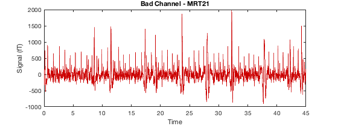
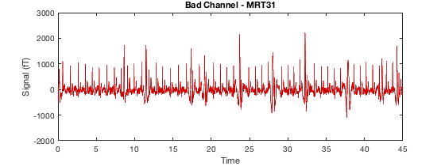
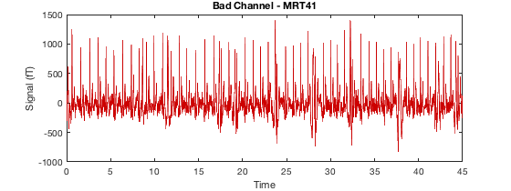
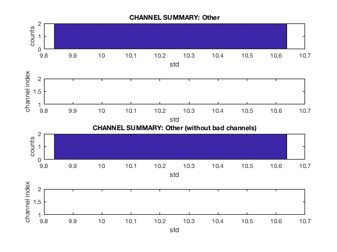
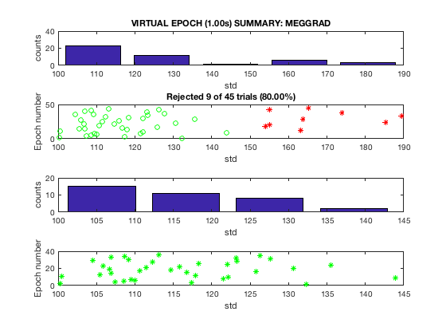
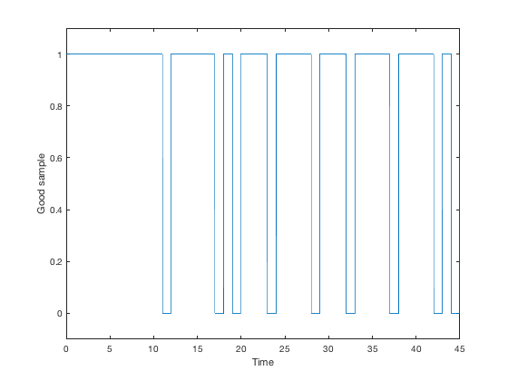

Preproc - Standard artefact rejection
This example script shows how to perform basic artefact detection and rejection. The main input required is an MEEG object.
Contents
A key part of most analysis pipelines is some form of artefact detection and rejection. Aside from ICA (and indeed before running ICA) it can be important to identify bad channels, epochs, or trials. This functionality is provided in OSL by osl_detect_artefacts - if you are already familiar with OSL, this is essentially the same as osl_detect_badevent but a bit cleaner and more versatile.
There are broadly two kinds of artefacts we might want to identify
- Bad channels - where an entire channel should be rejected. Rejection is performed by setting D.badchannels
- Bad times - periods of time in the recording that should be rejected. For continuous recordings, this is performed by setting D.badsegments. For epoched recordings, this is performed by setting D.badtrials.
To start with, let's load in an MEEG object. We will remove all existing bad channels
D = spm_eeg_load(fullfile(osldir,'example_data','roinets_example','subject_1')); D = D.badchannels(1:D.nchannels,0);
First, we can run artefact detection for both bad channels and bad times
D2 = osl_detect_artefacts(D);
Detecting artefacts in channel types: MEGGRAD Channel 113 (MEGGRAD - MLT31) is bad Channel 161 (MEGGRAD - MRF14) is bad Channel 238 (MEGGRAD - MRT21) is bad Channel 245 (MEGGRAD - MRT31) is bad Channel 252 (MEGGRAD - MRT41) is bad
Under the hood, the continuous recording is epoched into dummy trials, outliers in those trials are used to identify bad segments, and then those bad segments are marked in the original recording (and the temporary epoched data is deleted). If you pass in an MEEG object that is already epoched, then these epochs/trials will be used instead. This is determined by whether D.type is continuous or not.
osl_detect_artefacts has a number of different options. Firstly, you may only want to detect bad channels - for example, if you have a set of trial data that hasn't been epoched yet, and want to just mark bad channels first (and reject bad trials later)
D2 = osl_detect_artefacts(D,'badtimes',false);
Detecting artefacts in channel types: MEGGRAD Channel 113 (MEGGRAD - MLT31) is bad Channel 161 (MEGGRAD - MRF14) is bad Channel 238 (MEGGRAD - MRT21) is bad Channel 245 (MEGGRAD - MRT31) is bad Channel 252 (MEGGRAD - MRT41) is bad
Alternatively, you may have already marked bad channels and now want to identify only bad times
D2 = osl_detect_artefacts(D,'badchannels',false);
Detecting artefacts in channel types: MEGGRAD Bad times - rejected 9.00s (20%) in modality MEGGRAD
Note that any bad segments, trials, or channels that are already marked will be carried forward in osl_detect_artefacts - that is, you will not lose anything that has already been marked.
Another important parameter you may wish to vary is the artefact rejection threshold. This is specified as a signifiance level for the underlying outlier test (which is a Generalized ESD test). The default level is 0.05. To detect more artefacts, we can raise this value. You can set thresholds for bad channels (channel_significance) and bad times (event_significance) independently. To demonstrate the effect of the threshold, compare we can run the artefact detection for bad channels with different threshold values.
D2 = osl_detect_artefacts(D,'badtimes',false,'channel_significance',0.01);
Detecting artefacts in channel types: MEGGRAD Channel 113 (MEGGRAD - MLT31) is bad Channel 161 (MEGGRAD - MRF14) is bad Channel 245 (MEGGRAD - MRT31) is bad
If we raise the threshold, we find more artefacts
D2 = osl_detect_artefacts(D,'badtimes',false,'channel_significance',0.05);
Detecting artefacts in channel types: MEGGRAD Channel 113 (MEGGRAD - MLT31) is bad Channel 161 (MEGGRAD - MRF14) is bad Channel 238 (MEGGRAD - MRT21) is bad Channel 245 (MEGGRAD - MRT31) is bad Channel 252 (MEGGRAD - MRT41) is bad
And this trend continues
D2 = osl_detect_artefacts(D,'badtimes',false,'channel_significance',0.2);
Detecting artefacts in channel types: MEGGRAD Channel 30 (MEGGRAD - MLF14) is bad Channel 113 (MEGGRAD - MLT31) is bad Channel 161 (MEGGRAD - MRF14) is bad Channel 238 (MEGGRAD - MRT21) is bad Channel 245 (MEGGRAD - MRT31) is bad Channel 246 (MEGGRAD - MRT32) is bad Channel 252 (MEGGRAD - MRT41) is bad
You can limit the maximum number of channels that are marked bad if you wish
D2 = osl_detect_artefacts(D,'badtimes',false,'channel_significance',0.05,'max_bad_channels',2);
Detecting artefacts in channel types: MEGGRAD options.max_bad_channels was reached for MEGGRAD, there may be additional bad channels present Channel 161 (MEGGRAD - MRF14) is bad Channel 245 (MEGGRAD - MRT31) is bad
You can view the results of your artefact detection using oslview. Check osl_detect_artefacts.m for a full list of options. You can also display summary plots of the output for bad channels
D2 = osl_detect_artefacts(D); report.bad_channels(D2);
Detecting artefacts in channel types: MEGGRAD Channel 113 (MEGGRAD - MLT31) is bad Channel 161 (MEGGRAD - MRF14) is bad Channel 238 (MEGGRAD - MRT21) is bad Channel 245 (MEGGRAD - MRT31) is bad Channel 252 (MEGGRAD - MRT41) is bad     
or for bad segments
D2 = osl_detect_artefacts(D,'badchannels',false);
report.bad_segments(D2);
Detecting artefacts in channel types: MEGGRAD Bad times - rejected 9.00s (20%) in modality MEGGRAD
Note that in this example, the bad segments are caused by bad channels, so if the bad channels are removed, then no bad segments are detected. For epoched data, use report.bad_trials instead of report.bad_segments.
Modality-specific artefacts
The artefacts that you detect are specific to a particular modality. This means that artefacts are detected separately in each sensor modality - for example, MEGMAG and MEGPLANAR could have different bad times. In contrast, bad trials are detected across all sensors. You can verify this in oslview by changing the modality/sensor type. When you specify artefacts manually in oslview, they only apply to the selected modality. If you specify bad segments in artefact channels such as EOG or ECG, they will be excluded when computing artefact channel correlations in AFRICA.
Selecting good samples
It's important in your analysis to exclude the artefact times. When you mark an artefact, the information is stored in the events field of the MEEG object. However, all of the data is still present. While SPM generally automatically excludes bad data, you need to do this manually when writing your own code. This can be accomplished using the good_samples function to identify good samples. The function takes in an MEEG object, and optionally a list of channels. It then returns the times when all samples were good. For example
figure plot(D.time,good_samples(D2)) xlabel('Time') ylabel('Good sample') set(gca,'YLim',[-0.1 1.1])
Each channel has its own list of bad samples, depending on the modality and whether or not the channel was bad. By default, good_samples will exclude all bad channels, but will aggregate over all remaining channels regardless of their modality. In other words, the usage for good_samples matches the channels indexed from the MEEG. For example
chans = D.indchantype('ALL','GOOD'); % Retrieve all good channels dat = D(:,:); dat = dat(chans,good_samples(D)); % Keep only the good samples
It might be more common to wish to retrieve only MEG data, in which case you could use
chans = D.indchantype('MEGANY','GOOD'); % Retrieve all good channels dat = D(:,:); dat = dat(chans,good_samples(D,chans)); % Keep only the good samples
Or equivalently (with less memory consumption)
chans = D.indchantype('MEGANY','GOOD'); % Retrieve all good channels dat = D(chans,:); dat = dat(:,good_samples(D,chans)); % Keep only the good samples
Note that if any bad channels are present in the channel list passed to good_samples, all samples will be shown as bad. If you have a trial structure, good_samples will return a matrix where the third dimension corresponds to each trial.
good_samples vs badsamples
Both the good_samples function and D.badsamples read events whose type starts with 'artefact' and returns a matrix with whether or not the artefact was present. However, there are three key differences between the good_samples function and D.badsamples
- good_samples returns True for good samples, whereas badsamples returns True for bad samples - so they are logically inverted.
- good_samples aggregates over channels, whereas D.badsamples does not. This means that D.good_samples returns a single vector for all channels, whereas D.badsamples returns a matrix with one row for each channel. This aggregation makes good_samples considerably faster than D.badsamples
- good_samples automatically maps modalities across online montages, whereas D.badsamples does not. For example, if you perform beamforming, the sensor data channel type might be MEGPLANAR but the beamformed channels will have channel type LFP. Artefacts marked in sensor-space will apply to MEGPLANAR but because this modality is different to LFP, D.badsamples will not recognize any of them as applying to the beamformed data. This is an extremely serious issue, because it results in artefacts remaining in the analysis. In contrast, good_samples will read the online montage, and see that the LFP channels are computed from MEGPLANAR, so it will account for artefacts in both LFP and MEGPLANAR.
It is recommended to always use good_samples instead of D.badsamples.